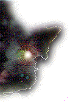

THE FELLAS HEREARE SUCH SWEETHEARTS And there's a feeling so pure about working withbrothers and sisters: health food, wholesome information, the tools tofree your mind . . . MYSTIC ARTS WORLD. Some of the Brotherhood are working on ways to make it sothey can sell not just the paraphernelia, but the holy substance too! When the church getsfull-fledged I'm going to be a Sister, and although they joke aboutpatriarchy I know they'll eventually give up some spirit to the femaleamong us as well: running rituals, administering sacrament, redeemingsouls!